Styles
A type is a TikZ style. Every tensor in a \tnlayer entry is drawn in one, and every index in one given as edge=, along= or down=. The package's styles are shapes and lines, each built on TikZ and on the ones before it — tn box is tn node as a rectangle, at a size, filled with paper — so what a style draws is what its definition says. Each one below shows its definition and a picture drawn with the package's commands and nothing else.
A notation builds styles of its own on these, named for what they mean, and a figure uses them wherever it would use the package's: the last entry is one, and examples/conventions/notation.tex is the one the examples are drawn in.
Tensors
tn nodeThe bare tensor: an outline in the one ink around its label, with no fill and no size of its own. Every type below is built on it.
Drawn by docs/reference/styles/style-node.tex
\begin{tikzpicture} \tnstack{S}{1}{a} \tnlayer{S}{a}{tn node/$T$}\end{tikzpicture}
Defined as
tn node/.style = {tn line, draw=stroke, minimum size=9mm, inner sep=0pt, outer sep=0pt, text=ttfg}
tn box, tn circle, tn capsule, tn rounded, tn diamondA box, a circle, a capsule, a rounded box and a diamond, each at the size at which it reads as the same weight as the others, and filled with paper so that an index drawn to its center is covered by it.
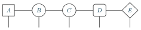
Drawn by docs/reference/styles/style-outlines.tex
\begin{tikzpicture} \tnstack{S}{5}{a} \tnlayer{S}{a}{tn box/$A$, tn circle/$B$, tn capsule/$C$, tn rounded/$D$, tn diamond/$E$} \tnconnect{S} \tnopen{down}{S}\end{tikzpicture}
Defined as
tn box/.style = {tn node, rectangle, fill=grey1, minimum size=7mm, inner sep=1pt} tn circle/.style = {tn node, circle, fill=grey1, minimum size=8mm} tn capsule/.style = {tn node, rectangle, tn@radius=4mm, fill=grey1, minimum size=8mm} tn rounded/.style = {tn node, rectangle, tn@radius=1.2mm, fill=grey1, minimum size=7.5mm, inner sep=1pt} tn diamond/.style = {tn node, diamond, fill=grey1, minimum size=9.5mm, font=\small}
tn triangle right, tn triangle left, tn triangle up, tn triangle downA triangle points. Pointing right or left, its index down the site leaves from a corner of its flat side (tn leg anchor); pointing up or down, it has one index on its apex side however many sites it spans (tn single). Its indices lean one way, in at its flat side and out at its apex, which an arrow on a bond follows unless the other end, or the type, says otherwise (tn flux).
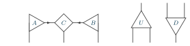
Drawn by docs/reference/styles/style-triangles.tex
\begin{tikzpicture} \tnstack{S}{3}{a} \tnlayer{S}{a}{tn triangle right/$A$, tn diamond/$C$, tn triangle left/$B$} \tnconnect[along=tn arrow]{S} \tnopen{down}{S} \tnstack[tree]{U}{2}{a} \tnlayer{U}{a}{tn triangle up/$U$/2} \tnopen{up}{U} \tnopen{down}{U} \tnstack[tree]{D}{2}{a} \tnlayer{D}{a}{tn triangle down/$D$/2} \tnopen{up}{D} \tnopen{down}{D}\end{tikzpicture}
Defined as
tn triangle right/.style = {tn node, regular polygon, regular polygon sides=3, shape border rotate=-90, fill=grey1, minimum size=10.5mm, font=\small, tn leg anchor=corner 3, tn@lean={left=in, right=out}} tn triangle left/.style = {tn triangle right, shape border rotate=90, tn leg anchor=corner 2, tn@lean={right=in, left=out}} tn triangle up/.style = {tn node, isosceles triangle, isosceles triangle stretches, shape border rotate=90, fill=grey1, minimum width=10.5mm, minimum height=9mm, font=\small, tn single=up, tn@lean={down=in, up=out}} tn triangle down/.style = {tn triangle up, shape border rotate=-90, tn single=down, tn@lean={up=in, down=out}}
tn dot, tn oplusA copy tensor: an ink dot, diagonal in all its indices, which a layout meets at its center from every side. And a circled plus, the other half of a controlled NOT: a dot joined to one along a layer, the wire of the site between them crossing the line (+).
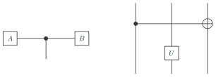
Drawn by docs/reference/styles/style-dot.tex
\begin{tikzpicture} \tnstack{S}{3}{a} \tnlayer{S}{a}{tn box/$A$, tn dot/, tn box/$B$} \tnconnect{S} \tnopen{down}{S-a-2} \tnstack{X}{3}{a, b} \tnlayer{X}{a}{tn dot/, +, tn oplus/} \tnlayer{X}{b}{|, tn box/$U$, |} \tnconnect[apart=b]{X} \tnopen{up}{X} \tnopen{down}{X}\end{tikzpicture}
Defined as
tn dot/.style = {tn node, circle, fill=stroke, minimum size=1.8mm} tn oplus/.style = {tn node, circle, fill=grey1, minimum size=5mm, path picture={\draw[tn line, draw=stroke] (path picture bounding box.north) -- (path picture bounding box.south) (path picture bounding box.west) -- (path picture bounding box.east);}}
tn wide, tn tall, tn small, tn flat, tn sizeAny outline, resized: wide, tall, small and flat. A tensor that spans sites or layers is stretched by its layout; these are for one that is not. And tn size=<factor>, any outline at a factor of its size – its label stays the size of the text – which is what a stack's size= and scale= give every tensor of it.
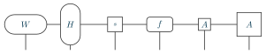
Drawn by docs/reference/styles/style-sizes.tex
\begin{tikzpicture} \tnstack{S}{6}{a} \tnlayer{S}{a}{{tn capsule, tn wide}/$W$, {tn capsule, tn tall}/$H$, {tn box, tn small}/$s$, {tn rounded, tn flat}/$f$, {tn box, tn size=0.7}/$A$, {tn box, tn size=1.4}/$A$} \tnconnect{S} \tnopen{down}{S}\end{tikzpicture}
Defined as
tn wide/.style = {minimum width=17mm} tn tall/.style = {minimum height=17mm} tn small/.style = {minimum size=6mm, font=\scriptsize} tn flat/.style = {minimum width=10.5mm, minimum height=6mm} tn size/.code = {% \pgfmathsetlengthmacro\tn@szw{(\pgfkeysvalueof{/pgf/minimum width})*(#1)}% \pgfmathsetlengthmacro\tn@szh{(\pgfkeysvalueof{/pgf/minimum height})*(#1)}% \pgfkeyslet{/pgf/minimum width}\tn@szw \pgfkeyslet{/pgf/minimum height}\tn@szh \ifx\tn@rad\@empty\else \pgfmathsetlengthmacro\tn@szr{(\tn@rad)*(#1)}\tikzset{rounded corners=\tn@szr}\fi}
tn fillA solid fill in a colour of the theme, outlined in the one ink: tn fill=<colour>.
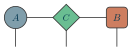
Drawn by docs/reference/styles/style-fill.tex
\begin{tikzpicture} \tnstack{S}{3}{a} \tnlayer{S}{a}{{tn circle, tn fill=blue3}/$A$, {tn diamond, tn fill=green3}/$C$, {tn rounded, tn fill=warm3}/$B$} \tnconnect{S} \tnopen{down}{S}\end{tikzpicture}
Defined as
tn fill/.style = {draw=stroke, fill=#1} tn fill/.default = grey3
tn gate, tn envThe types a gate and an environment block are drawn in. They are named for the structure that draws them, so that a notation has one place to colour them: a stack draws its left= and right= blocks in tn env.
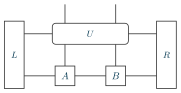
Drawn by docs/reference/styles/style-gate-env.tex
\begin{tikzpicture} \tnstack[left=$L$, right=$R$]{S}{2}{g, a} \tnlayer{S}{g}{tn gate/$U$/2} \tnlayer{S}{a}{tn box/$A$, tn box/$B$} \tnconnect{S} \tnopen{up}{S-g-1}\end{tikzpicture}
Defined as
tn gate/.style = {tn rounded, inner sep=3pt, font=\small} tn env/.style = {tn box, minimum width=\tn@envw, font=\small}
tn leg anchor, tn flux, tn single, tn indexWhat a type says about its indices, read back by the layouts: where its index down the site leaves – T's from its corner, and the stack moves T across so that the corner is on the site's line (tn leg anchor); which way its indices run, in or out – P's left one out, which the arrow on its bond follows (tn flux); the side on which it has one index however many sites it spans – S, below (tn single); and its indices, named, each on a side – M, with an index left, l, and two down, s and t, and none right or up, so that it is joined to nothing on its right and opened nowhere above; s and t, two on one side of one site, leave it apart (tn index), and an index there may say its own way, s:down:out. The triangles have the first three built in; any outline can be given them.
![What a type says about its indices, read back by the layouts: where its index down the site leaves -- T's from its corner, and the stack moves T across so that the corner is on the site's line (tn leg anchor); which way its indices run, in or out -- P's left one out, which the arrow on its bond follows (tn flux); the side on which it has one index however many sites it spans -- S, below (tn single); and its indices, named, each on a side -- M, with an index left, l, and two down, s and t, and none right or up, so that it is joined to nothing on its right and opened nowhere above; s and t, two on one side of one site, leave it apart (tn index), and an index there may say its own way, s:down:out. The triangles have the first three built in; any outline can be given them.](figures/style-index.svg)
Drawn by docs/reference/styles/style-index.tex
\begin{tikzpicture} \tnstack{S}{2}{a, b} \tnlayer{S}{a}{{tn box, tn leg anchor=south west}/$T$, {tn box, tn flux={left=out}}/$P$} \tnlayer{S}{b}{2*tn box/$A$} \tnconnect[along=tn arrow]{S} \tnstack{R}{2}{a} \tnlayer{R}{a}{{tn rounded, tn single=down}/$S$/2} \tnopen{up}{R} \tnopen{down}{R} \tnstack{N}{2}{a} \tnlayer{N}{a}{{tn box, tn index={l:left, s:down, t:down}}/$M$, tn box/$B$} \tnconnect{N} \tnopen{up}{N} \tnopen{down}{N} \tnopen{rest}{N-a-1}\end{tikzpicture}
Defined as
tn leg anchor/.code = {\gdef\tn@legat{#1}} tn flux/.code = {\xdef\tn@flux{\zap@space#1 \@empty}} tn single/.code = {\gdef\tn@single{#1}} tn index/.code = {\tn@indexkey{#1}}
Indices
tn edge, tn wavy, tn arrow, tn doubleWhat an index looks like: plain, wavy, with an arrowhead, or two fused into one. Where it goes is the layout's; a command takes the type as edge=, along= or down=.
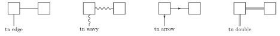
Drawn by docs/reference/styles/style-edges.tex
\begin{tikzpicture} \tnstack{A}{2}{a} \tnlayer{A}{a}{2*tn box} \tnconnect[along=tn edge]{A} \tnopen[label=tn edge]{down}{A-a-1} \tnstack{B}{2}{a} \tnlayer{B}{a}{2*tn box} \tnconnect[along=tn wavy]{B} \tnopen[edge=tn wavy, label=tn wavy]{down}{B-a-1} \tnstack{C}{2}{a} \tnlayer{C}{a}{2*tn box} \tnconnect[along=tn arrow]{C} \tnopen[edge=tn arrow, label=tn arrow]{down}{C-a-1} \tnstack{D}{2}{a} \tnlayer{D}{a}{2*tn box} \tnconnect[along=tn double]{D} \tnopen[edge=tn double, label=tn double]{down}{D-a-1}\end{tikzpicture}
Defined as
tn edge/.style = {tn line, draw=#1} tn edge/.default = stroke tn wavy/.style = {tn edge, decorate, decoration={snake, amplitude=0.55mm, segment length=2.4mm, pre length=0.4mm, post length=0.8mm}} tn arrow/.style = {tn edge, postaction={decorate}, decoration={markings, mark=at position 0.58 with {\iftnarrows\arrow{Latex[length=1.7mm]}\fi}}} tn double/.style = {tn edge, double=grey1, double distance=1.2pt}
tn arrowstn arrows=false, as an option of the picture, turns every arrowhead off: the same file, drawn for a reader who does not need the directions.
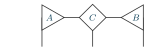
Drawn by docs/reference/styles/style-arrows.tex
\begin{tikzpicture}[tn arrows=false] \tnstack{S}{3}{a} \tnlayer{S}{a}{tn triangle right/$A$, tn diamond/$C$, tn triangle left/$B$} \tnconnect[along=tn arrow]{S} \tnopen{down}{S}\end{tikzpicture}
Defined as
tn arrows/.is if = tnarrows
tn labelThe text of a label: what label= and labels= write at the end of an open index, and what \tnput and \tnmid write anywhere else.
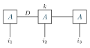
Drawn by docs/reference/styles/style-label.tex
\begin{tikzpicture} \tnstack{S}{3}{a} \tnlayer{S}{a}{3*tn box/$A$} \tnconnect{S} \tnopen[label=$i_{#1}$]{down}{S} \tnmid{S-a-1}{S-a-2}{$D$} \tnput{S-a-2.north}{$k$}\end{tikzpicture}
Defined as
tn label/.style = {font=\small, inner sep=2pt}
Paths of one's own
tn line, tn line widthThe one stroke every outline and index is drawn in, for a path of one's own – here a brace over two tensors, drawn between their names and no coordinate. tn line width sets it.
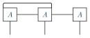
Drawn by docs/reference/styles/style-line.tex
\begin{tikzpicture} \tnstack{S}{3}{a} \tnlayer{S}{a}{3*tn box/$A$} \tnconnect{S} \tnopen{down}{S} \draw[tn line, rounded corners=2pt] (S-a-1.north west) -- ++(0,0.25) -| (S-a-2.north east);\end{tikzpicture}
Defined as
tn line/.style = {line width=\pgfkeysvalueof{/tn/line width}} tn line width/.code = {\pgfkeyssetvalue{/tn/line width}{#1}}
tn frameA dashed box, drawn around a part of a network to set it apart – the two tensors an update is about to act on. It is a path of one's own, as tn line's is.
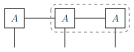
Drawn by docs/reference/styles/style-frame.tex
\begin{tikzpicture} \tnstack{S}{3}{a} \tnlayer{S}{a}{3*tn box/$A$} \tnconnect{S} \tnopen{down}{S} \draw[tn frame] ([shift={(-1.5mm,1.5mm)}]S-a-2.north west) rectangle ([shift={(1.5mm,-1.5mm)}]S-a-3.south east);\end{tikzpicture}
Defined as
tn frame/.style = {tn line, draw=black!50, dashed, rounded corners=2mm}
A notation of one's own
Styles named for what they mean, built on the package's, in the preamble or a notation file; a figure then uses them as it uses the package's own, as a type in \tnlayer and an edge type in edge=. Here a state in Vidal's form: tensors and the weights on the bonds between them. A tensor's style is best a type (\tntype), which can name its indices for the layout to hold it to: a weight has an index left and one right, and nothing else.
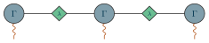
Drawn by docs/reference/styles/style-own.tex
\tntype{site}{tn circle, tn fill=blue3}\tntype{weight}{tn diamond, tn small, tn fill=green3, tn index={l:left, r:right}}\tikzset{phys/.style = {tn wavy, draw=warm4}}\begin{tikzpicture} \tnstack{S}{5}{a} \tnlayer{S}{a}{site/$\Gamma$, weight/$\lambda$, site/$\Gamma$, weight/$\lambda$, site/$\Gamma$} \tnconnect{S} \tnopen[edge=phys]{down}{S-a-1, S-a-3, S-a-5}\end{tikzpicture}